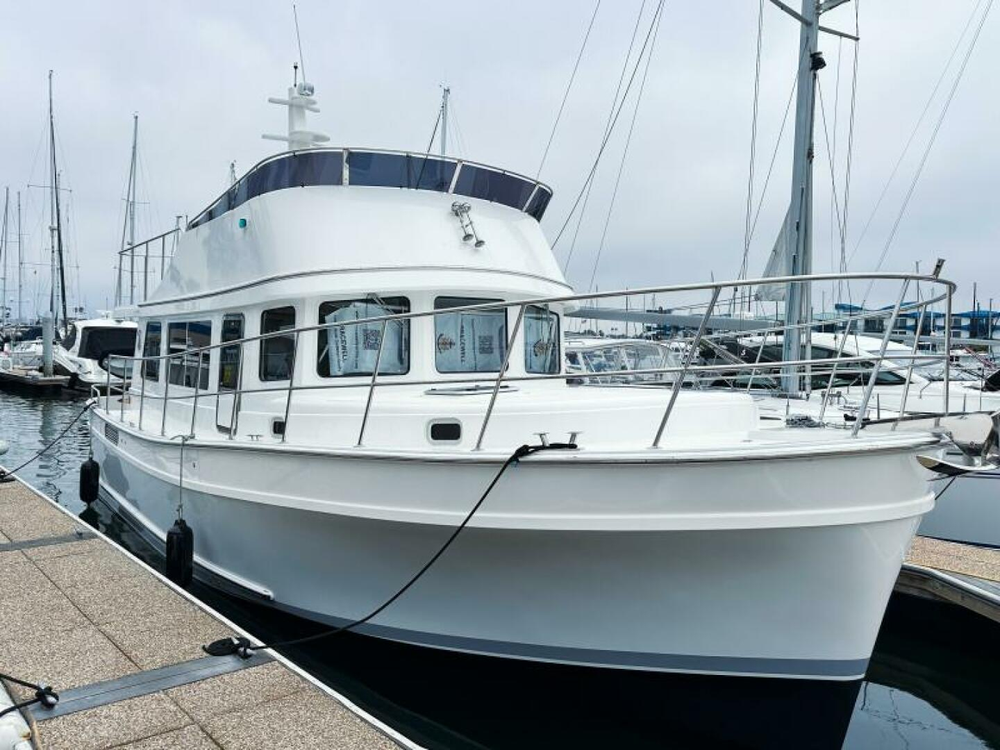

Camano 41 Trawler
2006–2007
The Camano 41 is a rare Canadian-built fast-trawler-style cruiser developed as a much larger interpretation of the company’s Keelform concept. It combines a single high-output Yanmar diesel and straight shaft with lower and flybridge helms, a large one-stateroom interior, split head/shower arrangement and substantial machinery space. Its 14-foot beam, roughly 28,000-pound displacement and extensive onboard systems place it in a different ownership and marina class from the compact Camano 28/31.

- Length
- 41 ft
- Beam
- 14 ft
- Draft
- 3.75 ft
- Hull behaviour
- Semi-Displacement
- Fuel
- Diesel
- Propulsion
- Shaft
- Engine configuration
- Single inboard diesel
- Boat family
- Trawler
- Construction
- Fiberglass composite; model-specific survey required
Best for
- Couples wanting a spacious single-stateroom fast trawler
- Extended Great Loop, Great Lakes and coastal cruising
- Owners who value machinery access, tankage and a flybridge more than compact dimensions
Trade-offs
- Rare model with limited model-specific inventory and community knowledge
- 14-foot beam and yacht-scale displacement materially increase marina, haul-out and operating costs
- Generator, thruster, inverter and other cruising systems increase maintenance complexity
- Single-engine propulsion does not provide twin-engine redundancy
Known concerns
- No model-specific concern has been promoted to B-Atlas’s evidence threshold. This does not mean the model has no age-, condition- or hull-specific risks.
Inspection focus
- Confirm the individual 41 specification because published beam, draft and tank figures vary between factory-era and brokerage sources
- Inspect windows, deck, flybridge and mast penetrations for moisture intrusion
- Inspect the single Yanmar installation, cooling, exhaust, shaft, rudder and steering systems
- Inspect aluminum fuel tanks, water/holding systems, manifolds and access
- Test bow thruster, generator, charging/inverter systems and owner-added electrical equipment
- Verify flybridge, tender/davit and folding-mast condition and actual air draft
Continue researching
Related boat models
31 ft · Semi-Displacement
40.83 ft · Semi-Displacement
41.33 ft · Semi-Displacement
40.58 ft · Semi-Displacement
41.5 ft · Semi-Displacement
41.5 ft · Semi-Displacement
About this record
B-Atlas preserves uncertainty: missing information remains unknown rather than being treated as a negative. Specifications and guidance describe the model record; individual boats can differ by year, equipment, refit and condition.